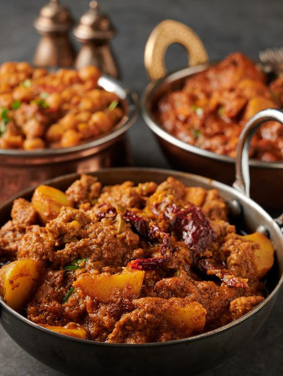
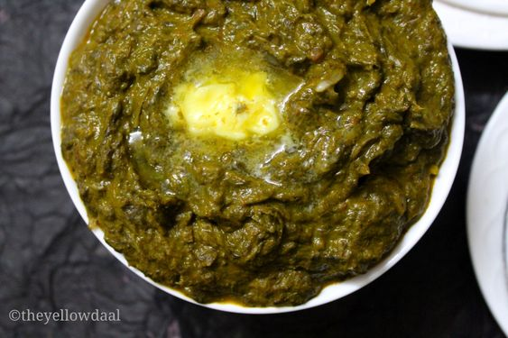
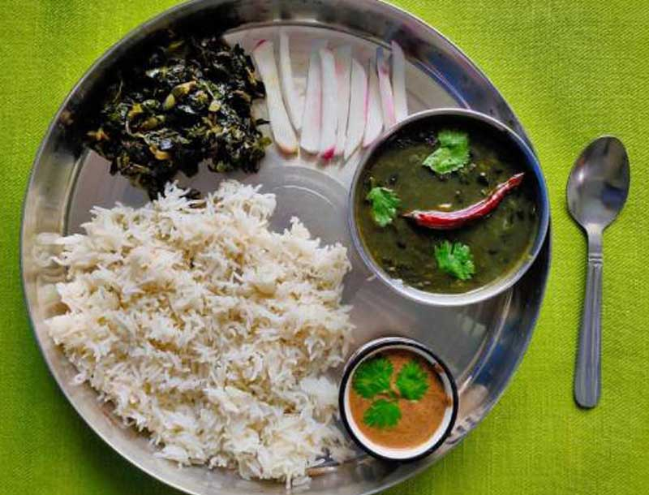

Famous Foods of Uttarakhand
Aloo Keema

Aloo Keema Recipe:
- Ingredients:
- 500g minced meat (lamb or goat)
- 3 medium potatoes, peeled and cubed
- 1 onion, finely chopped
- 2 tomatoes, chopped
- 1 tablespoon ginger-garlic paste
- 1 teaspoon red chili powder
- 1 teaspoon turmeric powder
- 1 teaspoon garam masala
- 1/2 teaspoon cumin seeds
- 1/4 cup chopped coriander leaves
- Salt to taste
- Oil for cooking
- Instructions:
- Heat oil in a pan, add cumin seeds, and sauté onions until golden brown.
- Add ginger-garlic paste and cook for a minute.
- Add minced meat and cook until it changes color.
- Add tomatoes, red chili powder, turmeric powder, and salt. Cook until tomatoes are soft.
- Add potatoes and enough water to cover the mixture. Simmer until potatoes and meat are tender.
- Stir in garam masala and coriander leaves. Cook for a few more minutes.
- Serve hot with roti or rice.
Kandali Saag

Kandali Saag Recipe:
- Ingredients:
- 500g kandali leaves (nettles), cleaned and chopped
- 1 onion, finely chopped
- 2 tomatoes, chopped
- 1 tablespoon ginger-garlic paste
- 1 teaspoon cumin seeds
- 1 teaspoon coriander powder
- 1/2 teaspoon turmeric powder
- 1/2 teaspoon red chili powder
- Salt to taste
- Oil for cooking
- Instructions:
- Heat oil in a pan, add cumin seeds, and sauté onions until golden brown.
- Add ginger-garlic paste and cook for a minute.
- Add tomatoes, coriander powder, turmeric powder, red chili powder, and salt. Cook until tomatoes are soft.
- Add chopped kandali leaves and cook on low heat until the leaves are tender and well-cooked.
- Adjust seasoning as needed. Serve hot with chapati.
Bhatt Ki Churdkani

Bhatt Ki Churdkani Recipe:
- Ingredients:
- 1 cup bhatt (black beans), soaked overnight
- 1 onion, finely chopped
- 2 tomatoes, chopped
- 1 tablespoon ginger-garlic paste
- 1 teaspoon cumin seeds
- 1 teaspoon coriander powder
- 1/2 teaspoon turmeric powder
- 1/2 teaspoon red chili powder
- Salt to taste
- Oil for cooking
- Instructions:
- Heat oil in a pan, add cumin seeds, and sauté onions until golden brown.
- Add ginger-garlic paste and cook for a minute.
- Add tomatoes, coriander powder, turmeric powder, red chili powder, and salt. Cook until tomatoes are soft.
- Add soaked bhatt and enough water. Cook on low heat until the beans are tender and the curry thickens.
- Adjust seasoning as needed. Serve hot with rice or chapati.